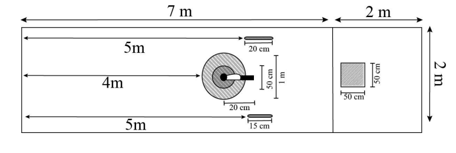

O que é o TETARFE
A modalidade reconhecida pela sigla TETARFE reúne os jogos de Tejo, Tava, Argola e Ferradura, combinando diferentes práticas tradicionais em uma única competição.
O Tejo é considerado um dos jogos mais antigos praticados no Rio Grande do Sul, havendo registros de sua prática por volta do ano de 1768 na cidade de Rio Grande.
Durante a restauração de um dos prédios mais antigos da cidade, foram encontrados restos de peças utilizadas no jogo, como fichas de cerâmica usadas no Tejo.

Estrutura utilizada para as modalidades do TETARFE.Como acontece a disputa
Cada competidor realiza 10 lançamentos de moedas do jogo do Tejo, 4 tiros de Tava, 3 lançamentos de Argolas e 3 lançamentos de Ferraduras.
Todos os lançamentos são realizados na mesma raia, sendo a pontuação final definida pela soma de todas as modalidades.
A pista destinada à disputa possui 9 metros de comprimento e 2 metros de largura.
Tejo
Modalidade realizada com o lançamento de fichas metálicas ou de cerâmica.
Tava
Disputa baseada no arremesso do osso, buscando pontuação conforme a queda.
Argola
Jogo realizado com argolas lançadas em direção a uma barra metálica.
Ferradura
Modalidade tradicional baseada no lançamento de ferraduras.
Estrutura e pontuação
A cancha do Tejo é formada por dois círculos, sendo o menor com raio de 25 centímetros e o maior com raio de 50 centímetros.
No centro do círculo menor é escavado um buraco, contendo uma adaga ou objeto semelhante fixado na borda posterior.
O jogador realiza 10 lançamentos utilizando fichas confeccionadas em metal ou cerâmica.
5 Pontos
Quando a ficha toca a lâmina da adaga e permanece no buraco.
4 Pontos
Quando a ficha permanece no buraco sem tocar a adaga.
3 Pontos
Quando a ficha permanece dentro do círculo menor.
2 Pontos
Quando a ficha permanece dentro do círculo maior.
-1 Ponto
Quando a ficha permanece fora do círculo maior.
Argolas e ferraduras
O jogo das Argolinhas consiste no lançamento de três argolas de tamanhos diferentes em direção a uma barra de ferro posicionada a cinco metros de distância.
A argola de 8 centímetros vale 8 pontos, a de 12 centímetros vale 5 pontos e a de 16 centímetros vale 3 pontos.
Já o jogo da Ferradura consiste no lançamento de ferraduras comuns em direção a uma barra metálica posicionada ao final da pista.
Quando a ferradura prende-se à barra antes de tocar o solo, a jogada vale 5 pontos. Caso toque o solo antes, valerá 2 pontos.